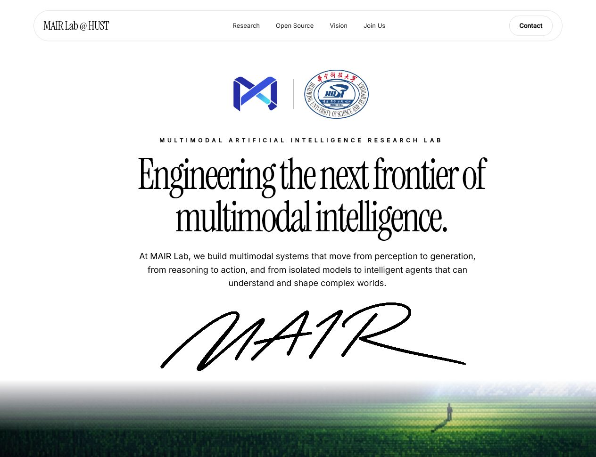
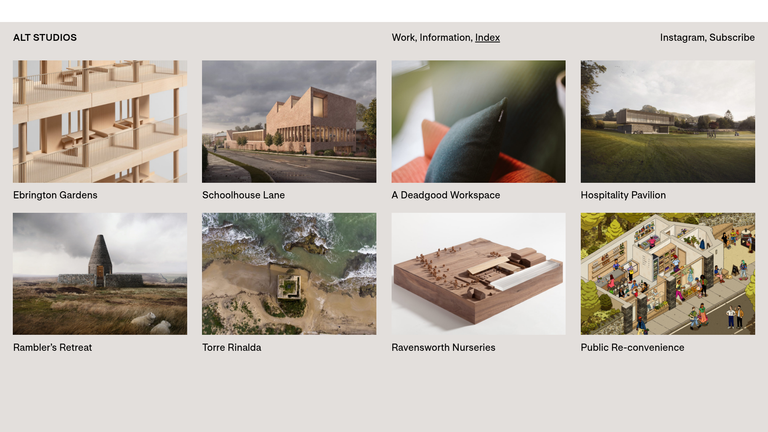
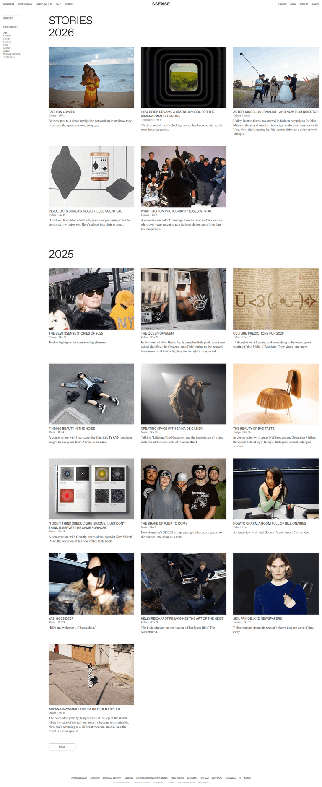
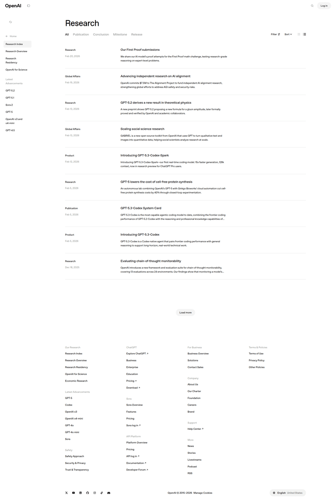
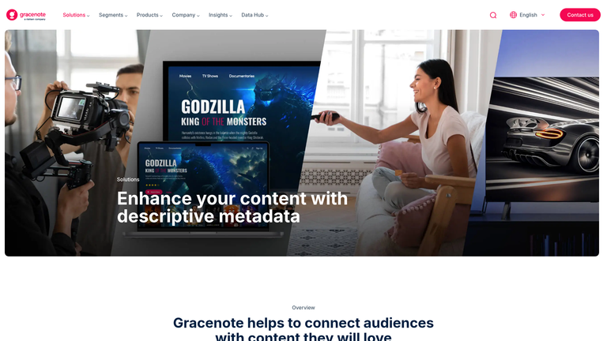
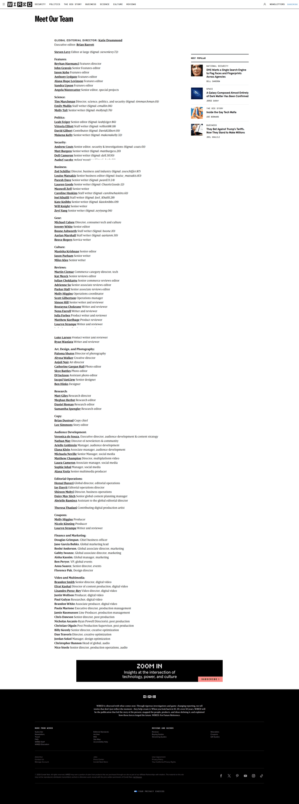

MAIR Lab
一页式官网方向
建议优先比较 A 与 B。 A 是国际研究机构式的项目图谱；B 是延续 Signature Spine 的研究期刊。C 信息效率最高，D 最具电影感。
Current State

先选方向
| 方向 | 新颖度 | 可实施性 | 适合 |
|---|---|---|---|
| A. Research Atlas | 高 | 高 | 项目与开源成果 |
| B. Living Journal | 高 | 高 | 叙事与持续更新 |
| C. Signal Spine | 中高 | 很高 | 论文和里程碑较多 |
| D. Cinematic Field Notes | 很高 | 中 | 高质量视频与 Demo |
A. Research Atlas

把研究方向处理成项目场域：大图或 demo 帧、项目代号、研究问题与论文/代码状态。使用细黑线、编号和无缝网格，不做通用圆角卡片。
HERO + VIDEO 01 PERCEPTION | 02 GENERATION 03 REASONING | 04 ACTION FEATURED SYSTEM / TMPO OPEN SOURCE LEDGER VISION → PAPERS → PEOPLE → JOIN
B. Living Journal

把官网当作不断更新的研究期刊。项目、论文、代码与新闻以 Feature / Note / Release / Paper 标签组成编辑节奏，最能延续当前“署名宣言”的人格。
HERO / COVER ISSUE 01 + FEATURE STORY RESEARCH FEATURES 2026 ARCHIVE: PAPER / RELEASE / NEWS MANIFESTO → TEAM → JOIN
C. Signal Spine

沿页面中央竖线展开研究节点、项目、论文和成员，直接延续 Signature Spine 概念。信息密度最高，也最容易持续维护。
PERCEPTION ● 2026
│ GENERATION
REASONING ● ACTION
TMPO ● 2025
PUBLICATIONS ● OPEN SOURCE
PEOPLE ● JOIN US
D. Cinematic Field Notes

每个研究方向是一章全宽影像，文字像片头字幕一样出现。视觉最强，但需要持续提供高质量视频、demo 与图像。
CHAPTER 01 / PERCEPTION [FULL-BLEED DEMO] CHAPTER 02 / GENERATION [FULL-BLEED DEMO] CHAPTER 03 / REASONING [FULL-BLEED DEMO] DEMO REEL → MANIFESTO → PAPERS → PEOPLE
固定内容骨架

- Research：Perception / Generation / Reasoning / Action
- Featured Projects：至少两个重点系统
- Open Source：仓库、论文、Demo
- Publications / News：按年份维护
- Vision、People、Join Us 与双 Logo Footer